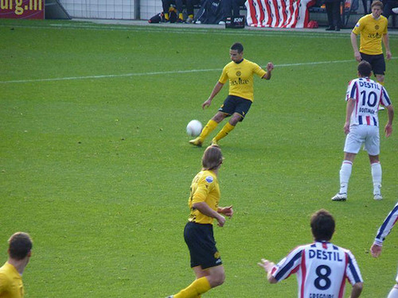
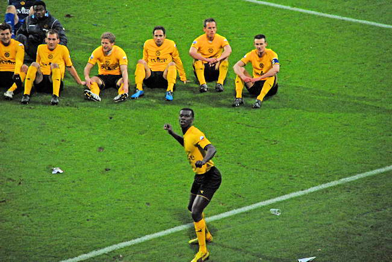

Veelal jeugdige supporters op deze koude zonnige dag.

Hadouir kapt Kargbo uit en bedient de inlopende Junker op maat.
Junker knalt de bal in het net: 0-1, (18').
Addo heeft in een duel met Demouge hands gemaakt door op de bal te vallen.
Demouge krijgt voordeel maar stuit op Castro. Omdat hij uit
deze situatie geen voordeel haalt besluit scheidsrechter Nijhuis een penalty
te geven.
Grégoire benut de penalty: 1-1, (21').
Roda, dat op een tiental minuten na in de tweede helft, de betere ploeg was
komt door een dropkick van Vormer op 1-2, (68'). Daarvoor was
het al bijna raak toen Boutahar een bal van de doellijn moest koppen, (30').
De Tilburgse defensie laat Junker ontsnappen die alleen op keeper Maenpaa
afstormt. Junkers schot wordt gekeerd maar uit de rebound
weet hij alsnog de bal tussen de benen van de keeper het doel in te werken:
1-3, (71').
Eindelijk weer eens drie punten voor Roda dat stijgt naar de 13e plaats en
daarmee even lucht krijgt.

Kah, die vanwege een blessure pas laat in de wedstrijd kwam heeft nog
voldoende energie om de humba te leiden. Saeijs die een puike
wedstrijd speelde lijkt met zijn gedachten al bij een andere club.
Foto's 1 t/m 8: Theo Springer, foto 9: Wiel Koekoek